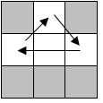
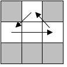
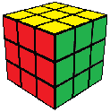

3x3 Beginner Tutorial
This is the last step! Turn the cube so that yellow is once again on top.
Look to see how many of the four sides of the cube (other than yellow and white) are completely solved. If you are very lucky, all four will be solved, and you're finished! Usually there will be 1 or 0 completed sides. (In other words, there will be 1 or 0 correct edges in the top layer.)
One Correct Side
If there is 1 correct edge, face the completed side and use this algorithm: (M2U')(M'U2M)(U'M2) 
The algorithm shuffles the 3 incorrect edges clockwise. Note that you can change the direction of the shuffle by turning the top clockwise instead of counterclockwise: (M2U)(M'U2M)(UM2)

No Correct Sides
If there are no correct edges, do the 3-edge shuffle facing any side, and after that you should have one correct edge. Now you can solve the cube using one more 3-edge shuffle.
Congratulations, you have solved the Rubik's Cube! If you memorize these steps, you can solve it consistently with a little practice.
